Wristband for the Diabetics
Intro
This is a project designed for users like my grandfather, who had been fighting with diabete for over two decades. He used to have so much pain measuring his blood sugar level using the blood taking needle. He had to watch us eating food he used to love. And he had to take a lot of pills every day to control his blood sugar and cure other health diseases caused by diabetes.
This is a concept design for newly diagnosed diabetics to aid them forming a new, healthy yet forced eating habit. The final solution is a wristband, with which users can scan food to predict their glucose level, the key to their health. The wristband leverages the curve screen technology, image recognition technology and machine learning. The concept was reviewed by 9 participants, with a high acceptance rate.
View Presentation at Google Slides

Process
This is my master graduation project. It started from June 2018 to May 2019. I pushed the design through a User Centered Design approach, meeting with my advisor every week. The concept was reviewed by the school committees and 9 volunteers recruited from Georgia Tech alumni network.
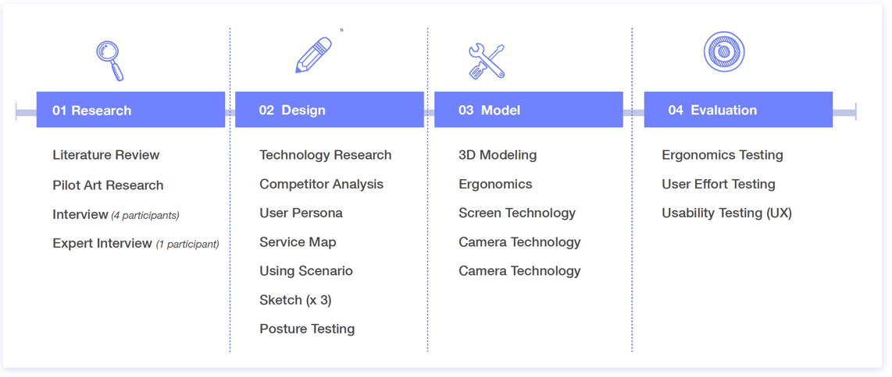
Research
Diabetes, glycemic control and diet management
Through literature review, I discovered that diabetes mellitus is a major health concern in the United States. There are two main type of diabetes, Type 1 (10%, mostly due to genes) and Type 2 (90%, mostly due to lifestyle). Among all types of diabetes management methods, diet has been treated as a corner stone. Food that diabetics eat can heavily influence their glucose level, and thus everyday experience. People can feel dizzy or faint when their glucose level is above or below certain level. For chronic diseases like diabetes, patients are required to take ongoing medical attention and limit activities of daily living. Self-monitoring of blood glucose (SMBG) and A1C are available to health care providers and patients to aid their glycemic control.
It is discovered that among all types of diabetes management methods, diet has been treated as a corner stone. Three main diet management methods widely applied are diet guide from professional dietitions, diet log app, and nutrient guidelines provided by American Diebetes Association.
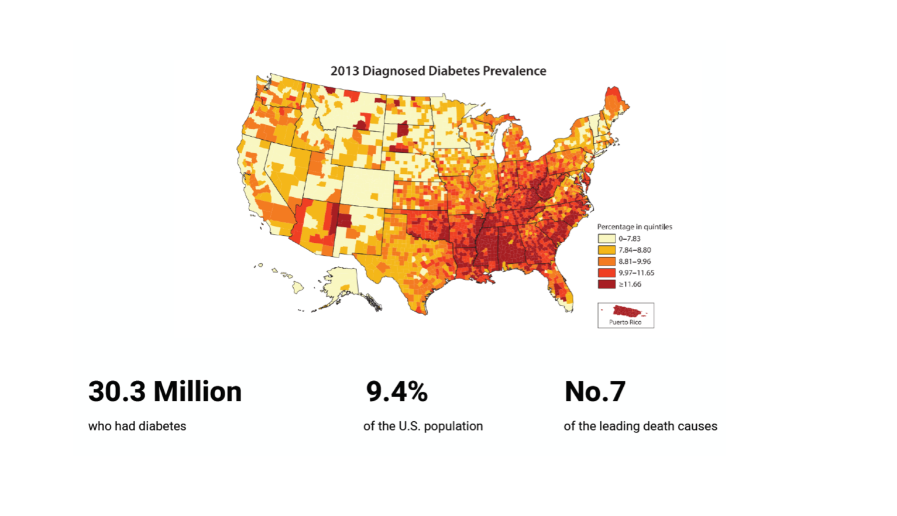User Research
Online observation, expert review and user interview
To be familiar with the diabetes community, I first conducted a passive online observation, glimpsing into their world. Among the 99 diabetes community in Facebook, i observed 10 of them. Then, in order to dig deeper into this topic, I managed to contact a nutrient management Ph.D. student to understand expert insight on this topic.
A user interview session was then scheduled. One Type-1 diabetic, one Type-2 diabetic and 2 diabetes caregivers volunteered in this session. These sessions helped us to understand potential users' behavirs, challenges, current solutions and how much impact this project could have.

User Pain Point
It can take a painful year for the newly-diagnosed diabetics to obtain empirical experience leading to a new eating habit: Eating food that won't cause blood sugar spike, resulting in dizziness or faint.
Through research, a pattern was found: Newly-diagnosed diabetics find it hard to follow guidelines, they had to experiment food bit by bit. It can take a whole year of failure, uncomfortableness, self-restriction to achieve what guidelines tell. This process also require family support: parents need to cook special dishes, their spouses have to restrict groccery lists, kids provide emotional support to their parents. But all of them can make mistakes from time to time, remembering the wrong food or wrong quantity. And all these can be more complicated when travel are involved. Yet none of the current technics provide efficent solution to this process.
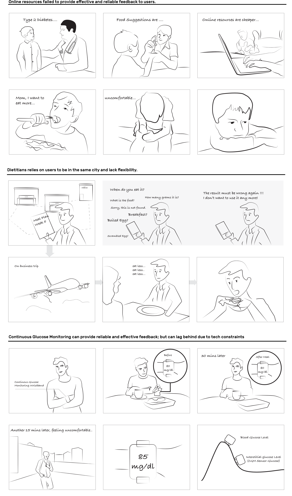
Design Direction
Design Hypothesis
Through research, I hypothesized that informing newly-diagnosed diabetics how food impact glucose level right before eating can help them to gain empirical experience more accurately and faster.
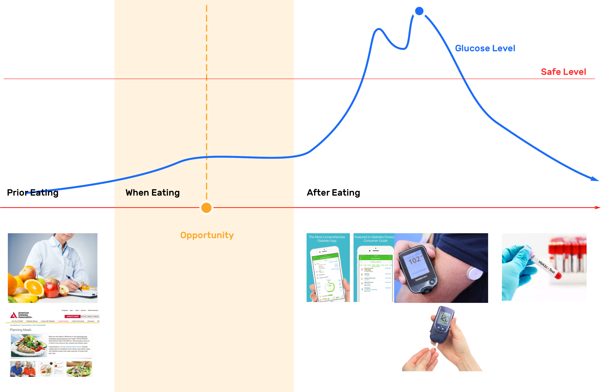
Feasibility Research
In order to allow users predict glucose level, I searched online and offline for tech support. Through several weeks attempt, I found a project in Columbia University that provide computational analysis for diabetics. They leveraged on image recognition to forcast glucose level after meal. Although the algorithm requires users to manually input the data, their project sheds light on the feasibility of this direction.
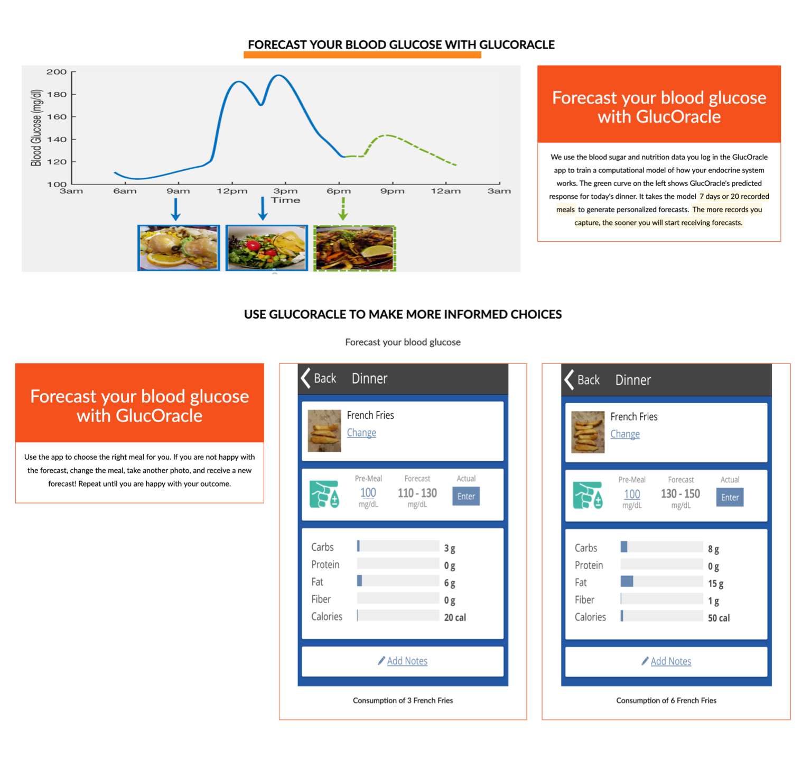
Target Users
As user research revealed, newly diagnosed diabetics have crucial need to change their eating behavior. Thus they are set as target users. This project aims to shorten the time for newly-diagnosed diabetics to change to a healthy eating bevavior, which reported as about a year in user interview sessions.
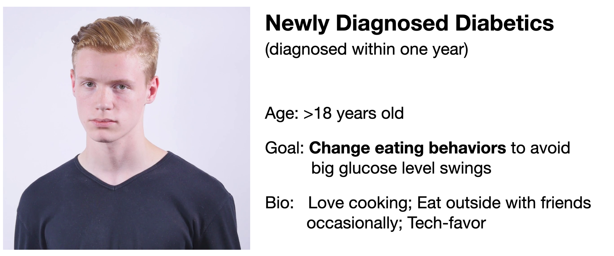Market Research
To determine a suitable product form, 10 different habbit forming products are gathered. There are mobile apps like Evernote Food, meal box like Amazon Meal Kits, robots like Fridgeezoo 24 Fridge Pet Pal, and so on. Users' feedback are gathered, and are used as guidelines to evalute these products. These products are all evaluated by usability, user satisfaction, effectiveness and cost. Among them, I found that wristband is the best product form for such need, as it can be used in different scenarios, can be synced with medication devices, can provide intime monitoring and it is less obstrusive. Thus I decided to design a wristband for the newly-diagnosed diabetics.
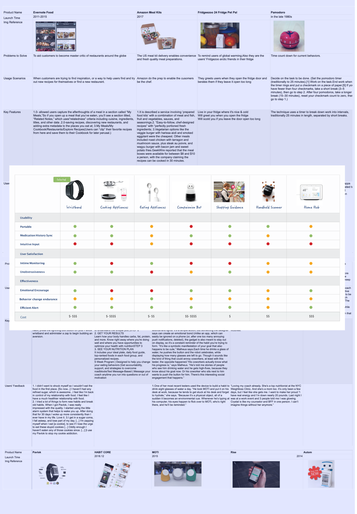Using Scenarios
Collected from users' feedback, I discovered there are three main scenarios the wristband can be used: At home, when do groccery shopping and in the restaurants. I draw out the following three storyboard to remind me of these contexts.
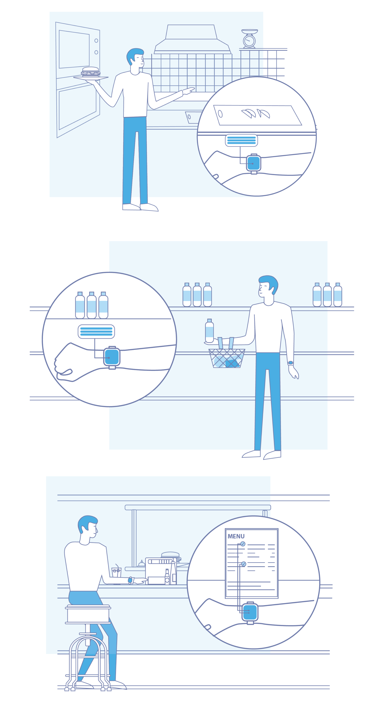Service Blueprint
A service blueprint was created. This helps me to understand user journey, features we could provide, and the tech support required. I decided to leverage on cameras for users to do meal log based on the GluOracle algorithm. Per previous user interview, meal log was reported as a main reason users abandon many diet app. It is a core user experience I need to improve to ensure users will use the final product.
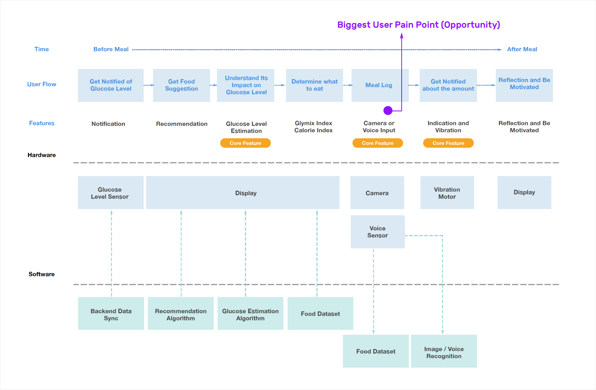Design Iteration
Design for better meal log experience
Through sketching, it is discovered there are design opportunities to design where the camera should location, as it will heavily influence how images are taken.
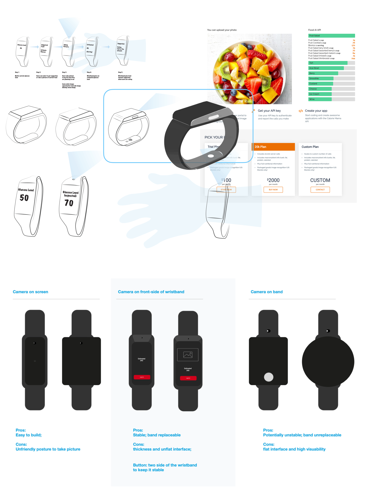Discover the look and feel
After designing several shape of the wristband, understanding users’ preference and criteria is important. To collect such user feedback, all the sketches were presented to users to let them choose their favorite ones. (They can choose multiple ones.) After their choices, questions like “ why do you choose this one?” “What quality are you looking for from these watches?” were asked.As a result, most of the participants prefer a square shape compared with a circle watch case. Keywords they used to describe their preference include stableness, clarity of the images and comfortable. Thus, a square shape is determined as the shape of the form of the final product.
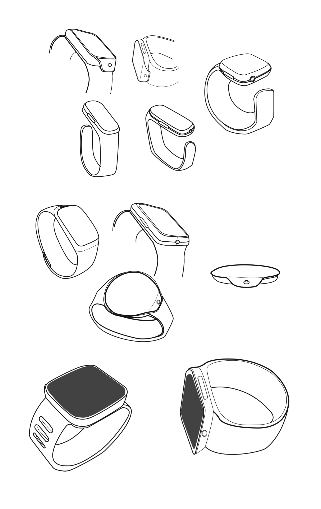😮 It is highly possible that users can struggle to take a full image
For cellphones, one of the behavior we conduct a lot yet unrecognized is to adjust the focus. For wristband that need to take food pictures, we need to make sure that the food pictures users take are intact. I tested with my mobile phone with different angles and height, and found half of them are far from usable.
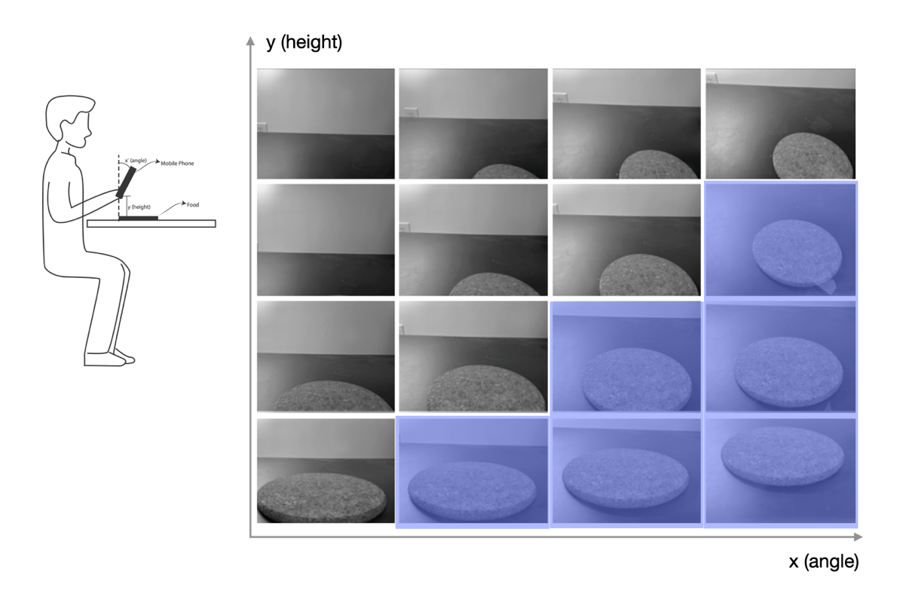🤔 Find users instinct behaviors when they take pictures of food
To discover what is the most natural way for users to take a food picture if they have a wristband, I prepared a prototype, a pinhole camera and a food jar. Volunteers are asked to take image of the picture as they wish. I used the pinhole camera to show them the food image. They would tell me which way is most comfortable among the postures they tested.

There are two ways users find most comfortable in order to take a full image. 3/5 users will lift their arms above the food jar if there is a camera below the wristaband. 2/5 users will twist their wrist if there is a camera in the front of the wristband.
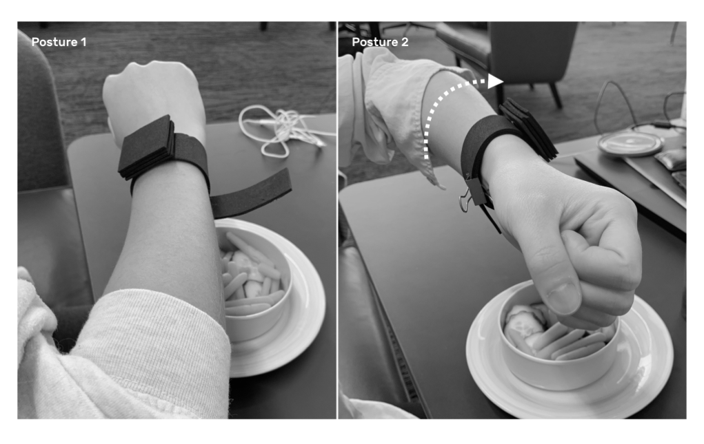🛠️ Camera Location: Back or Front
I decided to design with the posture users recommended: Lift or twist. While most of users (3/5) prefer to lift their arms, this concept (No.2 in the image below) can be hard to manufact and hard to fit for everyone. I decided to use the twist method, where a curve screen needs to be provided for users to view the image after twisting the arm.
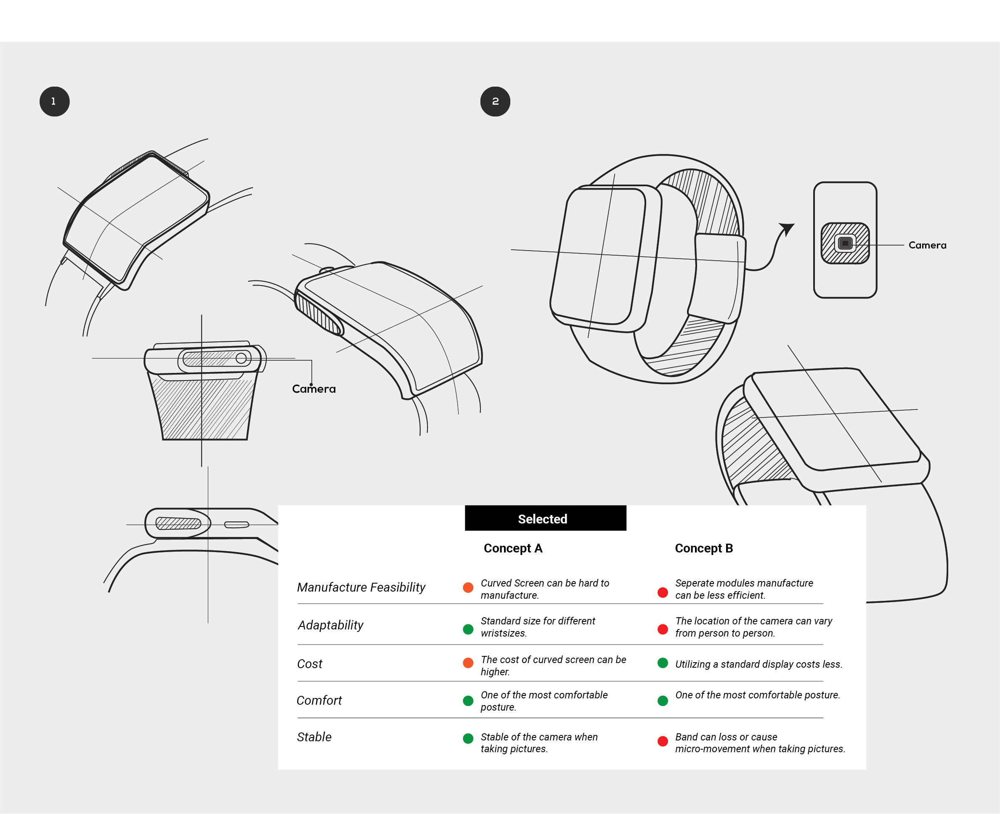Final Concept Design
To decide the curve angle of the wristband, I took the cross section image of human wrist as reference. This may not be 100% accurate, but it provide guideline when I 3D model the curve screen. A physical button is provided on the side. When users are taking pictures, they will be able to hold the wristband tightly with their thumb and index/middle finger.
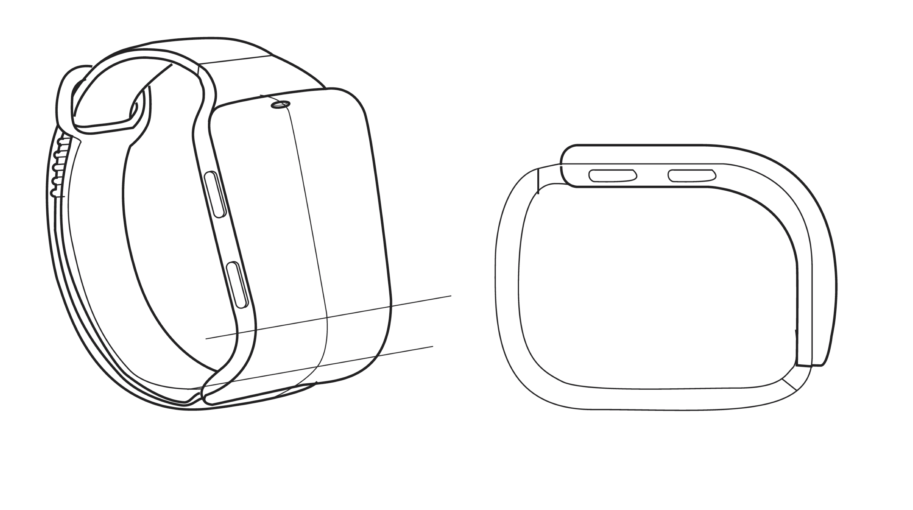 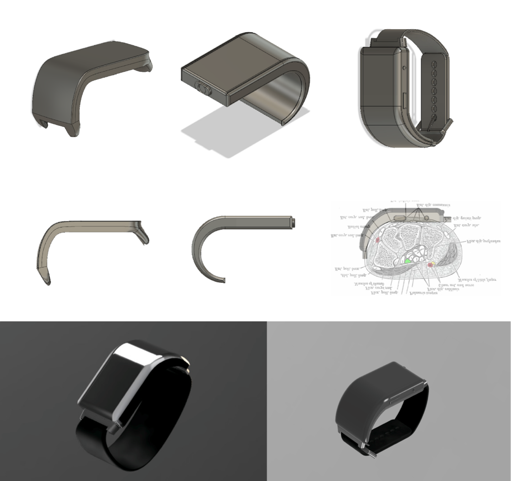 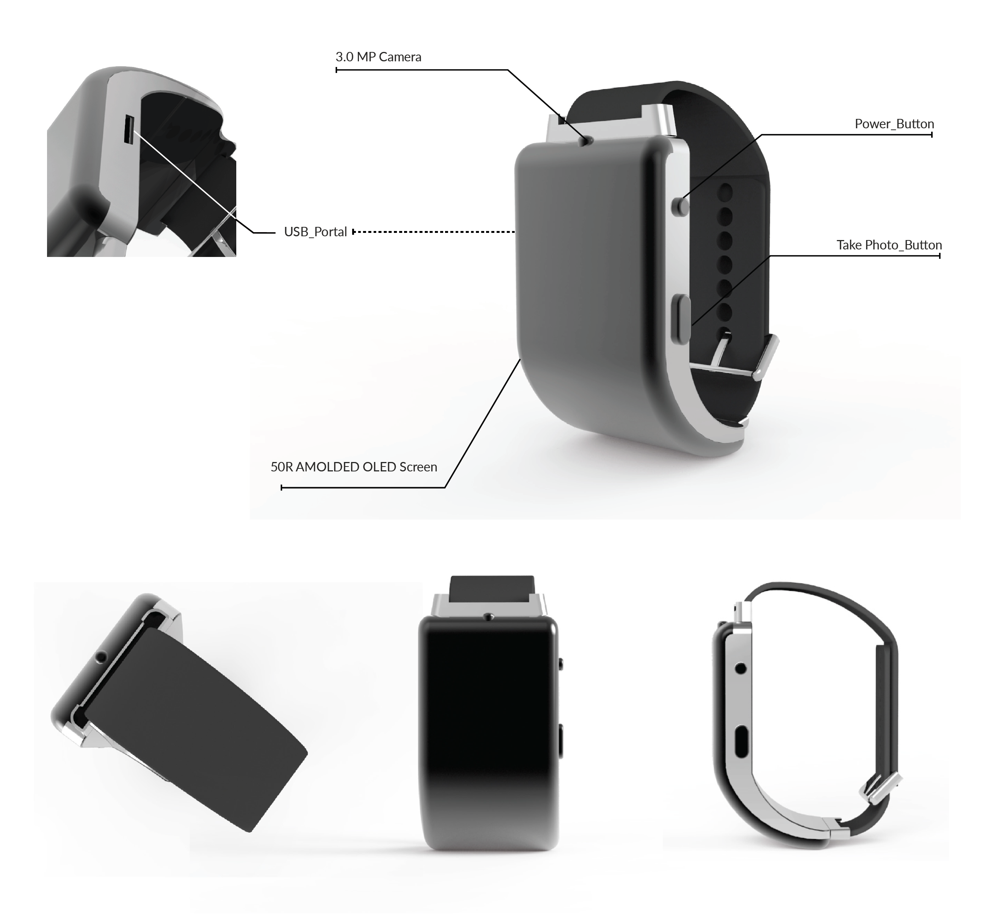Use the product at home, in restaurants or in supercenters

Prototyping
Market Standing
The only smart device that can users can monitoring glucose level and diet at the same time
This final product aims at building a bridge for glucose level monitoring and diet monitoring. It will also be part of the smart home system and the current medication system if the predicted accuracy is high enough. In the future, it can be envisioned that this wristband can connect and share data with many other products to enable more using scenarios.
Interaction MVP
Main flow design
In order to test the concept, I decided to generate a rough user interface so that users can consume the information from the prototype. With a curve screen as display, I decided to use the whole curve screen as the main canvas. Users may be able to scroll the information to the top to view more info on their display.
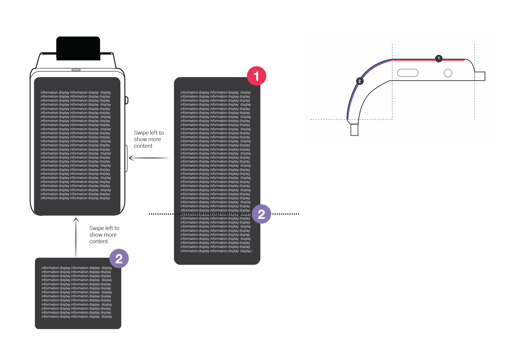
Based on the interaction above, I created the essential flows for meal log. There are two key algorithm output to show to users: Estimated Glucose level and Glycemix index of that food. The goal of this interface design is not to achieve the best usability score, but more to demo to users how the wristband work to gather first round of user feedback.
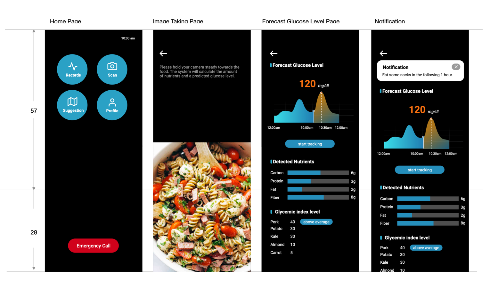
User Testing
Ergonomic Testing
9 participants (5 non-diabetics and 4 diabetics) were invited to place the 3D printed wristband onto their wrist to test if it fits. Three different sizes of wristbands are provided to them. Users’ thoughts were collected through a think-aloud protocol as well as a post-task question “How do you think it fits your wrist size, 5 means the most fit, 1 means the least fit?” (Due to limited access the diabetics, non-diabetics are also included in this study to provide more data.

Usability Testing
To evaluate if predicting glucose level before eating is helpful, 4 participant（2 diabetics and 2 diabetes caregivers）were presented with the physical prototype and the InVision prototype. They were asked to use the prototype to take a picture of your food and go through the interface with the moderator.

Pros and cons
Overall, participants are highly satisfied towards the concpet. Quantitative scores on fitness received a 4.7 average score; satisfaction level towards the effort required to log meals received an average score of 4.3; Interface usability has an average 4.3 user satisfaction rate; and the willingness to purchase have an average 4.5 score (5 as the most satisfying or the highest score). These score demonstrate a high user satisfaction level and an acknowledge to the concept. Users also verbally comment on the product being convenient to use and life-saving.
."Having the information always there and the easy access is life changing. It can help diabetics to manage their diabetes."
from a participant
Several potential modifications are needed for the next iteration reflected by users’ evaluation feedback. 1) Button: The power button is too small for users’ finger tip. Also, participants reported that placing the power button on the same side of photo-taking button can be error prone. 2) The joint of band and the watchcase need to be redesigned. Currently, it is discovered that the joint is not fitting human’s wrist shape when they are wearing. 3) Potential location of the camera: Based on the current curved sreenshape, it is discovered that at the bottom of the wristband can be a good location for the camera to maintain an even more natural posture. Thus it can be a discussion in the next prototype to further reduce users’ effort needed.
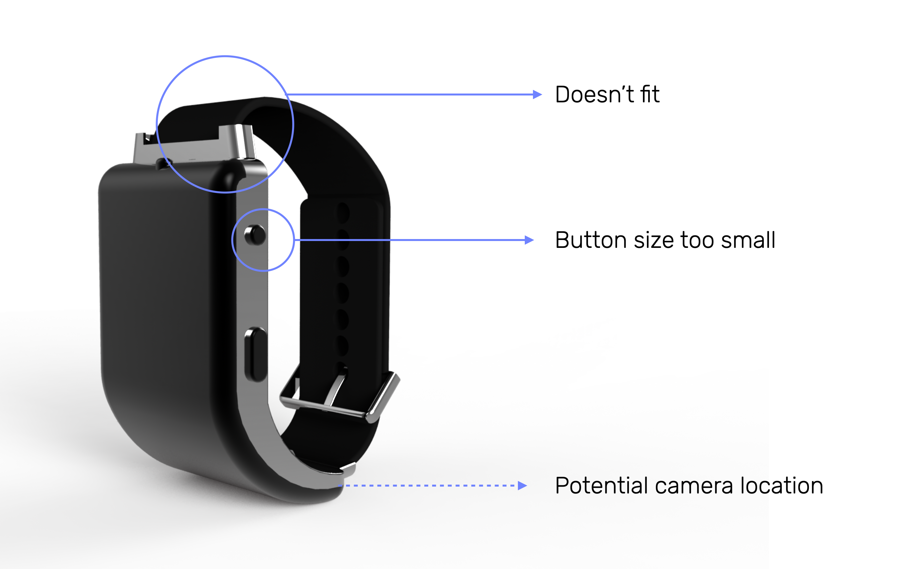As for the information provided to the participants, several modifications are needed for the next iteration. 1) Ability to change the image processing result. One participant mentioned that at certain dishes, he wants to knwo detailed information about one specific ingredient. Thus, an ability to easy input the meals’ ingredient can add more flexibility to the meal detection. 2) Change the display order of glycemic index and nutreint information. Glycemic index is a more important information than nutrient information for the diabetics to determine what to eat and how much to eat than nutreint data.Thus allowing users to view the glycemix index data should facilitate such need and behavior. 3) Ability to incorportate more dynamic information. Participants mentioned that they would also like a way to input key informations like insulin injection, exercise to help them form connections between their healthcare management plan and their glucose level. This can be a potential design direction in the next design phase.
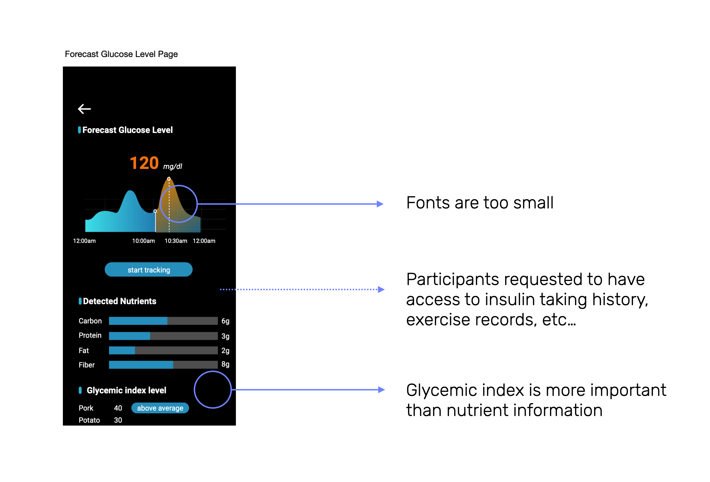